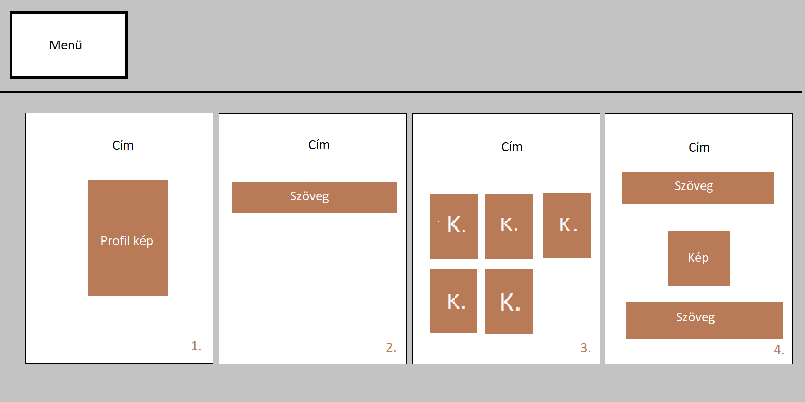

Annak ellenére, hogy nap mint nap rengeteg weboldalt látunk, nem volt ötletem, hogyan kezdjek neki, így kicsit inspirálódnom kellett, viszont lemásolni sem szerettem volna valaki weboldalának a szerkezetét és a tartalmát meg kicserélni a sajátomra, így beleütköztem a következő nagy kihívásba. Saját ötleteim szerint egy kész vázat át szerettem volna variáni, viszont ennek korlátot szabott a tudásom. A kettő összeegyeztetése elég sok időbe került. Végül sikerült megalkotni a következő tervet:

Ezzel a tervvel egy picit megnyugodhattam, viszont egy legyőzhetetlen probléma lépett fel. Ez annak volt köszönhető, hogy a w3school.com-on kezdtem el programozni megtanulni, majd az előadás videóit is átnéztem, illetve rengeteg youtube tutoriált is végigfutottam. Az első a legegyszerűbb megvalósítást ismertette, és ahogy haladtam a w3school-al úgy haladtam a Portfólióval. Ezek után következtek az előadási videók, melyek egy sokkal szebb megvalósítás eszközeit adták a kezembe és végül a youtube tutorialok pedig sokszor nem azt ismertették amit kerestem ezért még olyat is megtudtam, amit nem kerestem de nagyon jól tudtam hasznosítani a Portfólióm kódjában. Emiatt a folyamat miatt visszamenőleg mindíg javítanom kellett a kódomat és egy folyamatos fejlődés vette kezdetét. Emiatt kénytelen voltam konszenzusra jutni és egy minőséghez ragaszkodni.